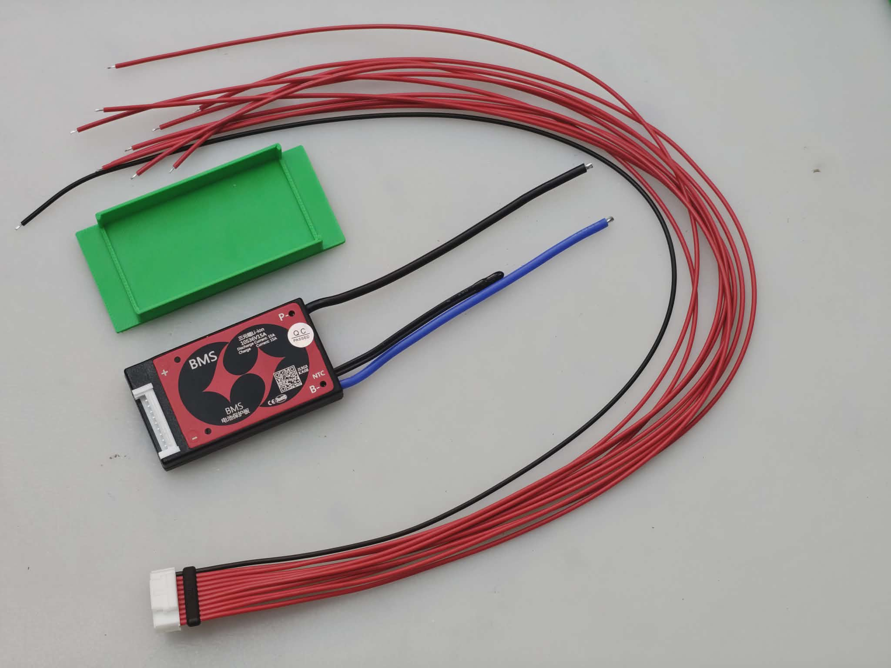
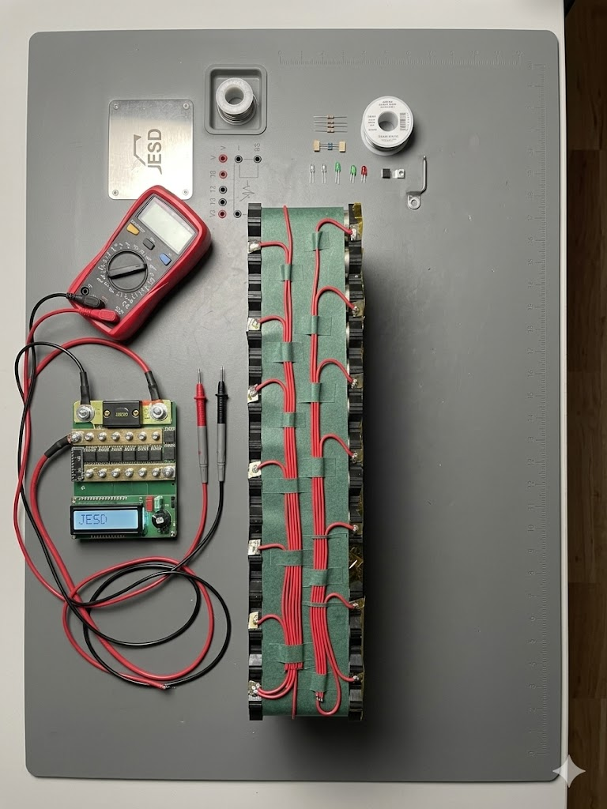
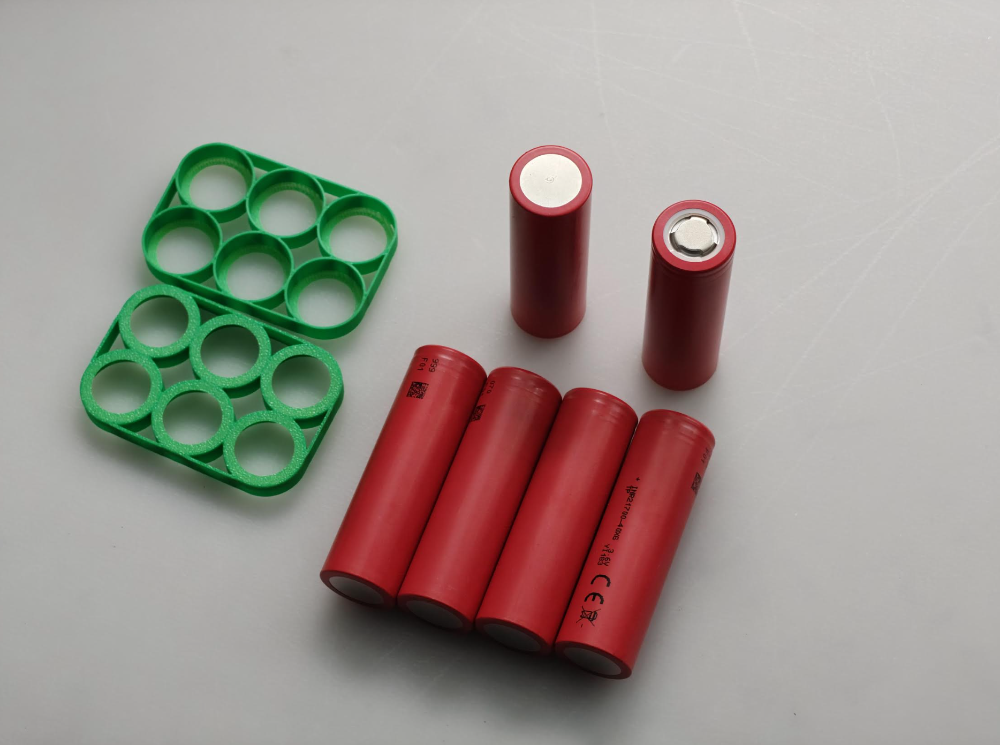
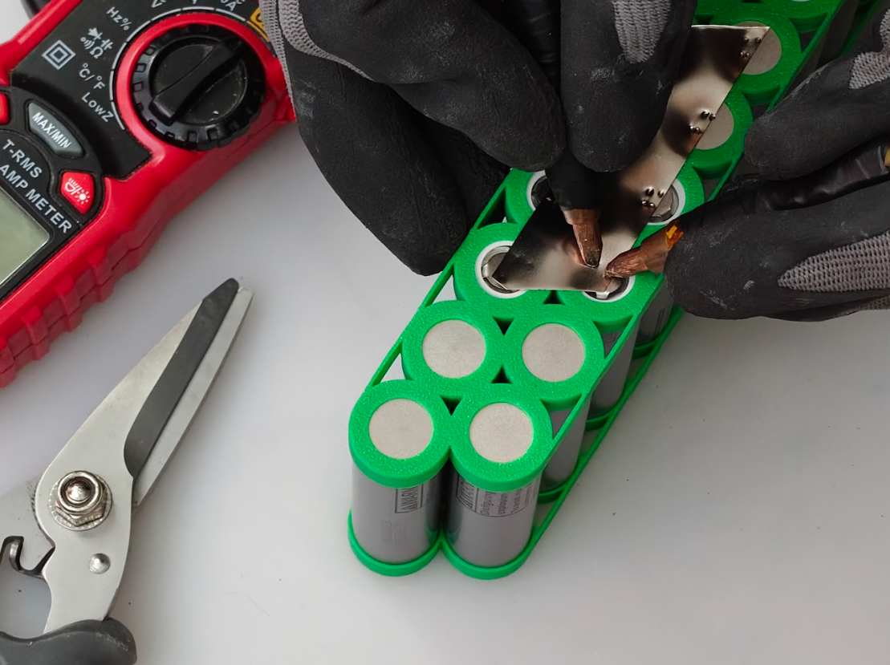

Felsökning & Diagnostik
Hur vi felsöker och diagnostiserar batterier
Felsökning
Vi felsöker batterier både för att diagnostisera fel men även för att hitta förbättringsåtgärder där batteriets livslängd kan förlängas. En vanlig åtgärd vi brukar utföra är att kontrollera programvara hos batteriets BMS (kretskort) och uppdatera den. Denna åtgärd kan förlänga livslängden på de flesta batterier, utan att en enda cell behövt bytas.
Vad är BMS?
BMS står för Battery Management System och är kretskortet som utgör "hjärnan" i ett batteri. BMS övervakar spänning och temperatur, förhindrar över- och underladdning och ser till att battericellerna balanseras för maximal livslängd och säkerhet.

Så går felsökningen till

Urladdningstest
Vi belastar batteriet under kontrollerade former för att simulera verklig användning. Detta visar hur batteriet presterar under tryck och avslöjar dolda spänningsfall.
Kontroll av BMS
Vi mäter och analyserar batteriets hjärna (Battery Management System) för att säkerställa att kretskortet kommunicerar korrekt och skyddar cellerna mot överladdning.

Kablage & Anslutningar
Vi inspekterar alla inre kablar, nickelband och lödpunkter manuellt. Många fel beror på mikrosprickor i lödningar eller skadade kontaktdon till följd av vibrationer.

Cellbalansering
Spänningen mäts över varje enskild cellgrupp. Om cellerna är i obalans kan batteriet stänga av sig i förtid. Vi utvärderar om cellpaketet kan balanseras om eller måste bytas.

Kapacitetsmätning
Vi mäter batteriets faktiska kvarvarande kapacitet (Ah) och jämför det med originalspecifikationen för att se exakt hur mycket räckvidd som gått förlorad över tid.

Säkerhetsanalys
Som ett sista steg säkerställer vi att batteriet inte utgör en brandrisk. Vi letar efter tecken på fuktskador, svullna celler eller kortslutningar i höljet.
Testprotokoll
Alla tester som genomförs registreras i ett testprotokoll tillsammans med batterihälsa. På ditt reparerade batteri finns en QR-kod där du kommer till vårt digitala serviceintyg. Där kan du enkelt ladda ned användarmanual och testprotokoll för testerna på det reparerade batteriet.
Är du redo att ge ditt batteri nytt liv?
Vi har rätt verktyg och expertis för att utföra en säker och långsiktig reparation.
Reparera nu